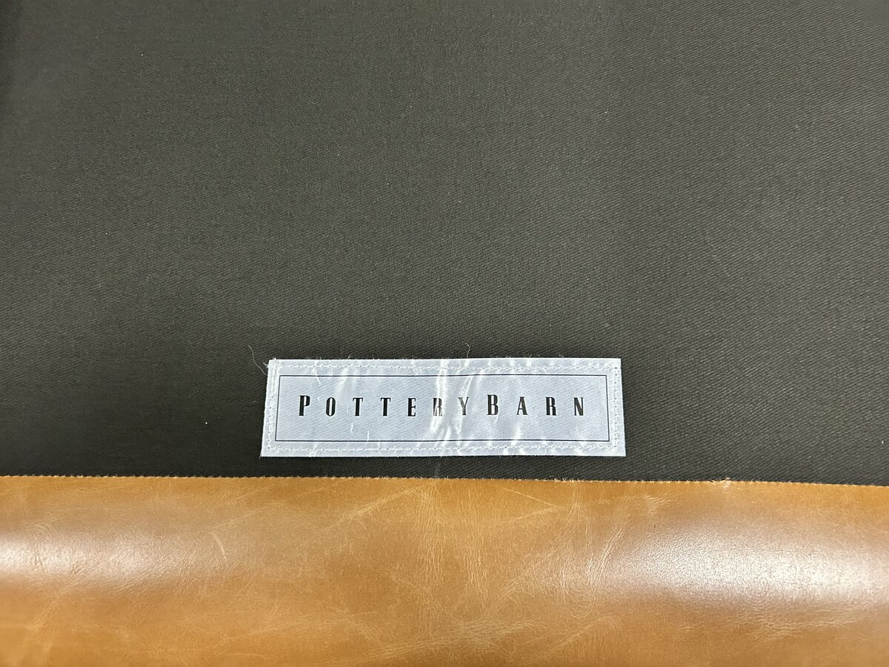

If you’ve been shopping for a used sofa in Edmonton and keep landing on Pottery Barn listings, the question is usually some version of: is this good furniture, or just a familiar name?
The answer depends on the collection. Where a piece was made, which line it belongs to, and what it’s covered in all change what you’re buying. This guide covers where to buy Pottery Barn in Edmonton, where its sofas are made, how they’re built, what they cost new, how they compare with Urban Barn and the other brands Edmonton buyers weigh against them, and what we learned from the Turner Square Arm leather sofa we bought and resold.
A Brief History of Pottery Barn
Pottery Barn was founded in 1949 by brothers Paul and Morris Secon, who opened a small store in Manhattan selling surplus and factory-second stoneware. It began as a discount housewares shop rather than a furniture brand. Williams-Sonoma, Inc. bought it in 1986 and built it into the catalogue-and-showroom home furnishings brand most people know now, alongside its sister brand West Elm.
Is There a Pottery Barn in Edmonton?
No. As of October 2026, Pottery Barn listed five stores in Canada: Chinook Centre in Calgary, Granville Street in Vancouver, Sherway Gardens and Yorkdale in Toronto, and DIX30 in Brossard, Quebec. The nearest to Edmonton is Calgary. Everything else is ordered online through potterybarn.ca and delivered, so most Edmonton buyers order upholstery they haven’t sat on, with delivery timelines attached.
That’s one reason a used Pottery Barn piece you can see in person makes sense here: it’s the only way to sit on one locally before you pay for it.
Where Are Pottery Barn Sofas Made?
It depends on the collection. Pottery Barn’s parent company owns its own upholstery manufacturer, Sutter Street, with plants in North Carolina. Pottery Barn’s Canadian product pages say which pieces come from there. The PB Comfort, for example, is “exclusively designed and masterfully upholstered at our Sutter Street Factory from USA and Imported materials.”
Other collections are imported. Pottery Barn’s page for the Turner leather sofa says “Imported,” and the 2018 Turner we bought carried a “Made in China” label underneath. The leather, frame, and construction on ours held up well; the point is simply that the U.S. upholstery story doesn’t apply to every Pottery Barn sofa.
It’s also worth reading labels rather than marketing. In April 2024, the U.S. Federal Trade Commission announced that Williams-Sonoma would pay a $3.175 million civil penalty, the largest in the agency’s Made in USA enforcement, for marketing products as made in the U.S. that were made in China, in violation of an earlier order. The products named included Pottery Barn Teen items, not sofas, but the lesson is the same: the label on the specific piece is the best evidence of where it was made.
Construction: How Pottery Barn Sofas Are Built
Pottery Barn publishes a useful amount of construction detail on its product pages.
- Frames. Engineered wood frames, with corner blocks on the Turner and mortise-and-tenon joinery on the PB Comfort. Our guide to judging a sofa’s frame covers what to check yourself on a used piece.
- Suspension. No-sag steel sinuous springs on both. That’s a common, reliable system; it isn’t the eight-way hand-tied springing some makers use.
- Cushions. On the Turner, the seat cushions have a down-blend-wrapped core, and the back cushions are polyester for a firmer feel. The PB Comfort also offers a memory foam seat option.
- Contract Grade. Several collections, the Turner and PB Comfort among them, are labelled Contract Grade, which Pottery Barn says means they’re engineered to meet select ANSI/BIFMA testing protocols, the standards used for commercial furniture.
On the Turner we handled, the Contract Grade frame was solid, with no give at all. In daily use, the difference from a well-built residential sofa is subtle; it’s a real specification rather than a marketing word, just not a dramatic one in person.
What Pottery Barn Costs New in Canada
On potterybarn.ca on October 13, 2026, the Turner Square Arm Leather Sofa listed at $4,349 to $6,674 regular, depending on size (65 to 104 inches) and leather, with some options on sale for less that day. The PB Comfort and other fabric collections start lower and vary widely by size and fabric. Compare a used Pottery Barn piece with the current price of the same model, size, and cover.
Pottery Barn sofas are highly configurable, which matters when you’re reading a used listing. That day the Turner came in five sizes, from a 65-inch apartment sofa to a 104-inch grand sofa, in two depths, with or without nailheads, with two leg finishes and two seat cushion options, and in 53 leather and fabric choices. Two used Turners can differ in width, depth, comfort, and cover, so check the label and measure rather than assuming one listing matches another.
How Pottery Barn Compares to Other Brands Edmonton Buyers Consider
Pottery Barn vs. Urban Barn
Urban Barn is a Canadian retailer, founded in Vancouver in 1990 and majority-owned by the Stern Group since 2007, according to Retail Insider. The practical difference for Edmonton buyers is access: Urban Barn has several stores here, including Mayfield Common and Skyview, so you can sit on a sofa before you buy, while the nearest Pottery Barn is in Calgary.
Price is the other difference. On October 13, 2026, Urban Barn listed leather sofas such as the Cowan at $2,999, the Carson at $3,299, and the Nicolo at $3,999, against $4,349 and up for Pottery Barn’s Turner. We’ve bought more Urban Barn than Pottery Barn: four Urban Barn sofas, including Renfrew and Preston top-grain leather sofas, against one Turner. Compare the specific models on frame, suspension, cushion fill, and leather type rather than the brand names.
Pottery Barn vs. West Elm
West Elm is Pottery Barn’s sister brand under Williams-Sonoma, and Sutter Street makes upholstery for both. The clearest difference is style: Pottery Barn leans classic and transitional, with deeper, softer seating, while West Elm leans mid-century and modern, with cleaner lines and often a more compact footprint. West Elm’s slimmer pieces can suit smaller condos and infills; Pottery Barn’s deeper ones suit family rooms. Compare the specific collections’ published construction rather than assuming one brand builds better. Our West Elm guide covers where its sofas are made and how they’re built.
Pottery Barn vs. Crate & Barrel
Crate & Barrel competes directly with Pottery Barn and has an Edmonton store at Southgate. It builds collections such as the Gather and Lounge in North Carolina. Crate & Barrel generally reads more contemporary; Pottery Barn more classic. A top line from either can out-build an entry line from the other, so compare models, not names.
Pottery Barn vs. EQ3
EQ3 is a Canadian brand that builds its custom upholstery in Winnipeg, sold in Edmonton through F2 Furnishings. Its range is contemporary and includes modular pieces; Pottery Barn’s leans toward deep, soft, traditional seating, with a wide choice of leathers on collections like the Turner. The choice usually comes down to the look and the room.
Pottery Barn vs. Restoration Hardware
RH sells through its own galleries, including one at Southgate in Edmonton, and its leather sofas generally cost more than Pottery Barn’s. Compare the specific models: the leather each uses and how it’s finished, the frame and suspension, and the price for the same size.

What We’ve Learned Handling Pottery Barn’s Turner Square Arm Sofa
We’ve bought and resold one Pottery Barn piece: a 2018 Turner Square Arm sofa in Sandstone Keystone aniline leather, one of Pottery Barn’s Contract Grade leather collections. What follows is what evaluating, cleaning, photographing, and selling it taught us, separate from the catalogue.
The leather was better than expected
The leather was visibly and tactilely high quality, more than many people expect from Pottery Barn. Pottery Barn describes it as top-grain and aniline-dyed. On ours, visible scars and natural stretch marks gave the surface character rather than a uniform appearance. Our leather sofa guide explains what terms like top-grain and aniline mean.
The back cushions don’t weigh what you’d expect, and that’s fine
Pick up a Turner back cushion and it feels almost hollow. Pottery Barn lists the backs as polyester, and the first instinct is that they were a place to save money. In use, they’re among the most comfortable back cushions we’ve sat on at this price. If the backs on a Turner feel under-stuffed, sit in it before you judge them.
The seat cushions are different: a down-blend-wrapped core, firm and resilient with a softer top. Together they make a plush, comfortable sit inside a tailored, square-armed exterior that looks more structured than it feels.
What this leather means for care
Pottery Barn’s care advice for the Turner is to vacuum the cushions routinely and never use detergents, polishes, preservers, or saddle soap, which it says can remove natural oils. The piece we handled had clearly been looked after. The previous owner told us they had used an annual leather treatment their Pottery Barn representative recommended, and at about seven years old the leather showed no cracking, dryness, or finish breakdown. For your own piece, follow Pottery Barn’s care instructions for the specific leather rather than copying that routine. On a used aniline piece, ask what has been used on it.
The legs
Low-profile, narrow, solid blocks run along the base rather than raising the sofa high, each held by two screws, and they read as part of the frame. Pottery Barn lists the legs as removable solid wood. On any used Turner, check that every leg is present and tight, with no wobble.
The depth doesn’t come through in photos
Ours was the 86-inch sofa, and it was 44 inches deep. The width reads accurately in photos; the depth doesn’t. Forty-four inches changes how a room feels and whether a layout works. If you’re considering a Turner from photos, measure your space before you go to see it.
What to Look for in a Used Pottery Barn
Beyond the standard used-sofa inspection, check these:
- The label. It shows the year the piece was made, the country of manufacture, and the cushion composition. The year is the most useful single fact on it.
- The frame. Sit in each seat and check for looseness, unusual movement, or persistent creaking. If something moves or makes noise, check the legs and connections before assuming the frame is damaged.
- The cushions, and which ones you’re testing. The seats should rebound firmly with some softness on top; the backs are lighter and rebound differently, which is normal. If a seat cushion stays flat or uneven after fluffing, inspect it more closely and check how it supports you when seated; fluffing alone won’t tell you whether the problem is compressed filling or worn foam. If the inserts need replacing, price that in when judging whether the asking price is fair.
- Leather care history. On aniline leather, ask what has been used on it. Neglected leather shows it in dryness, cracking, or a worn finish on the arms and seat fronts.
- Depth. Confirm the actual seat and overall depth before a viewing if you have a specific room in mind.
Pottery Barn Collections You’ll See Used
Pottery Barn’s range changes, but these collections were all on potterybarn.ca in October 2026 and are names worth recognizing on a used listing:
- Turner. A square-arm leather sofa in sizes from apartment to grand, Contract Grade. The piece we handled was a Turner in top-grain aniline leather.
- PB Comfort. Deep, comfort-focused sofas in roll-arm and square-arm styles, upholstered or slipcovered, made at Sutter Street.
- York. Slope-arm and square-arm styles, upholstered or slipcovered.
- Big Sur. A square-arm collection, upholstered or slipcovered, including chaise sectionals.
- Pearce. Square-arm sofas, upholstered or slipcovered, including a modern version.
A slipcovered model has one practical advantage on the used market: a worn or stained cover can be removed and cleaned, following Pottery Barn’s care instructions for that fabric.
Are Pottery Barn Sofas Good Quality?
The Turner we handled was: a solid Contract Grade frame, genuine aniline-dyed top-grain leather, and a comfortable, well-judged sit that held up through seven years with a careful owner. Pottery Barn publishes its construction, uses engineered wood frames and sinuous springs, and tests some collections to commercial standards. Quality still varies by collection and by how a piece was treated, and some lines are made in the U.S. while others are imported. Judge the specific piece: its label, frame, cushions, and upholstery.
Selling a Pottery Barn Sofa or Sectional
We buy Pottery Barn sofas and sectionals. Send photos and details through our Pottery Barn page; we aim to reply the same day. If the piece is a fit, we make an offer based on its model, age, and condition and explain how we got to it. Pickup is included in the offer, with no separate pickup fee. Once you accept, we schedule pickup with you, our crew collects it in an enclosed truck, and you’re paid by cash or e-transfer before it leaves your home.